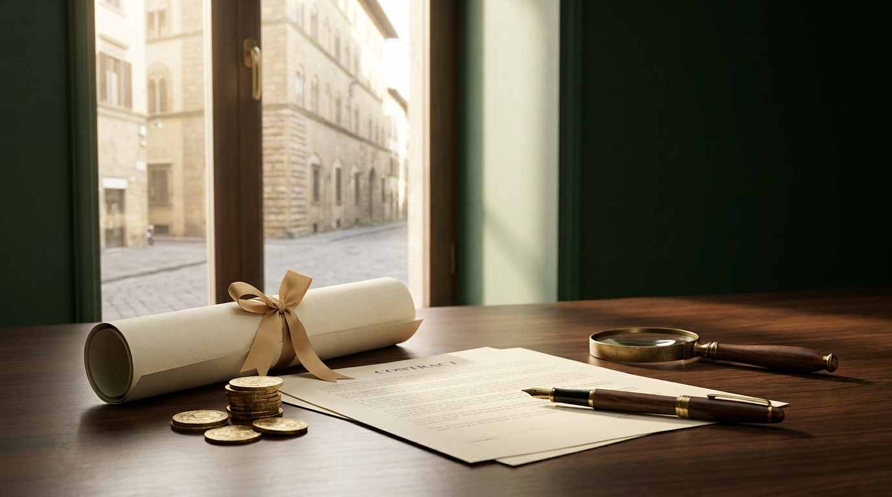

Retribuzione e qualifica del laureato: cosa dice l'art. 36 Cost.
I dati sulle retribuzioni dei laureati in Italia raccontano un divario crescente con l'estero. Il tema non è solo economico: tocca un principio costituzionale preciso, quello della retribuzione proporzionata alla qualità del lavoro. Vediamo cosa stabilisce l'ordinamento e quali strumenti hanno a disposizione i lavoratori che ritengono il proprio compenso inadeguato.

Il contesto
I rilevamenti di AlmaLaurea confermano una tendenza nota: in Italia il titolo accademico fatica a tradursi in retribuzioni allineate alla media europea. Il risultato è una crescente mobilità verso mercati esteri, dove la stessa qualifica viene remunerata in misura sensibilmente superiore.
Il fenomeno ha evidenti ricadute economiche e sociali. Ma esiste anche un profilo strettamente giuridico, spesso trascurato: la retribuzione non è una variabile interamente rimessa alla contrattazione privata. L'ordinamento fissa parametri minimi di adeguatezza.
Inquadramento normativo
Il riferimento è l'art. 36 della Costituzione, secondo cui il lavoratore ha diritto a una retribuzione "proporzionata alla quantità e qualità del suo lavoro e in ogni caso sufficiente ad assicurare a sé e alla famiglia un'esistenza libera e dignitosa".
La norma fissa due criteri distinti. La proporzionalità lega il compenso al contenuto della prestazione: una mansione qualificata, che richiede competenze specialistiche o un titolo di studio, dovrebbe riflettersi nella retribuzione. La sufficienza impone invece una soglia minima dignitosa, indipendente dal tipo di lavoro.
Il precetto è considerato dalla giurisprudenza immediatamente applicabile. In assenza di un compenso adeguato, il giudice può determinare la retribuzione spettante, di norma assumendo come parametro i minimi tabellari fissati dai contratti collettivi nazionali di lavoro (CCNL) del settore di riferimento. È il meccanismo della cosiddetta "giusta retribuzione".
Va precisato un punto: l'art. 36 garantisce un minimo, non un allineamento agli standard esteri. Il divario salariale con altri Paesi non è di per sé una violazione di legge. Diventa rilevante sul piano giuridico solo quando la retribuzione scende sotto le soglie di proporzionalità o sufficienza tutelate dall'ordinamento interno.
Implicazioni pratiche
Per il laureato assunto con mansioni qualificate, ma inquadrato e retribuito a livelli inferiori, la questione non è puramente retorica. Esistono due profili da verificare.
Il primo è il corretto inquadramento contrattuale. Capita che a una prestazione di livello elevato corrisponda formalmente un livello contrattuale più basso, con conseguente compenso ridotto. In questi casi rileva il principio per cui l'inquadramento deve seguire le mansioni effettivamente svolte, non la qualifica indicata sulla carta.
Il secondo profilo riguarda il rispetto dei minimi di CCNL. Se la retribuzione pattuita scende sotto i minimi tabellari del contratto collettivo applicabile, il lavoratore può agire per ottenere le differenze retributive.
Per le aziende, l'attenzione si sposta sulla coerenza tra mansioni assegnate e inquadramento. Un disallineamento sistematico espone a contenzioso e a richieste di differenze retributive, oltre che a un rischio di perdita di capitale umano qualificato.
Resta fermo che la decisione di cercare opportunità all'estero appartiene a valutazioni personali e di mercato, sulle quali il diritto interno nulla può. La tutela costituzionale opera entro i confini nazionali.
Cosa fare in concreto
- Verificate l'inquadramento. Confrontate le mansioni effettivamente svolte con il livello contrattuale attribuito e con le declaratorie del CCNL applicato.
- Controllate i minimi tabellari. Accertate che la retribuzione lorda non sia inferiore ai minimi previsti dal contratto collettivo di settore.
- Conservate la documentazione. Buste paga, lettera di assunzione, ordini di servizio e comunicazioni utili a dimostrare le mansioni reali.
- Formalizzate eventuali contestazioni. Una richiesta scritta di corretto inquadramento o di differenze retributive interrompe i termini di prescrizione e cristallizza la posizione.
- Valutate una verifica professionale. Prima di iniziative giudiziarie, consigliamo un esame tecnico del rapporto per stimare fondatezza e quantificazione delle pretese.
In sintesi
La fuga dei laureati verso l'estero è un dato di sistema. Sul piano individuale, però, chi ritiene la propria retribuzione inadeguata dispone di strumenti precisi, radicati nell'art. 36 della Costituzione e nella contrattazione collettiva. La leva giuridica non risolve il divario con i mercati esteri, ma garantisce che la retribuzione non scenda sotto le soglie di dignità e proporzionalità riconosciute dall'ordinamento.
---
Contributo informativo a cura di Tamburro & Partners - Avv. Giuseppe Tamburro. Non costituisce parere legale.
Ogni storia di lavoro ha i suoi tempi.
Se gestisci HR e vuoi un confronto su contenzioso, ispezioni o licenziamenti, scrivi allo studio. Ti rispondiamo entro un giorno lavorativo.